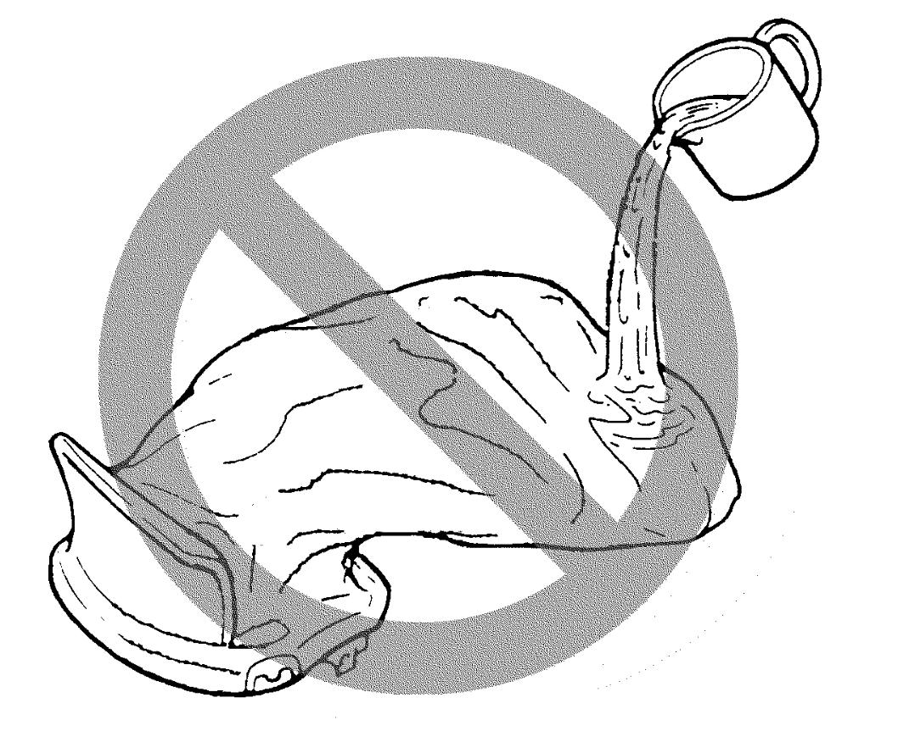
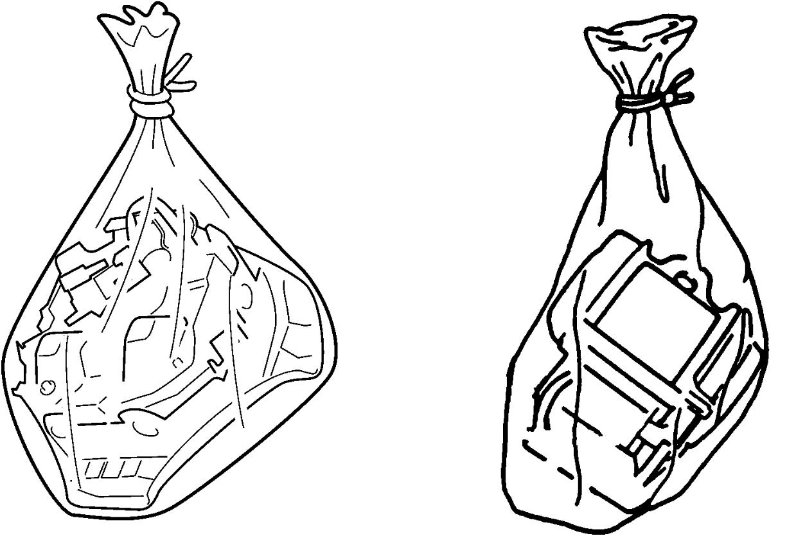

8B
| Deployed Air Bag (Inflator) Module and Activated Seat Belt Pretensioner Disposal |
If live air bag (inflator) modules or seat belt pretensioners are disposed of without being deployed/activated beforehand using the proper procedure, there is a risk of personal injury and health problems from contact with the harmful substances that may come out if the deployment container seal is broken.
Before disposing of any live air bag (inflator) modules or seat belt pretensioners, deploy/activate them using the specified procedure. Never dispose of any live ones through ordinary refuse disposal channels.
Deployed air bag (inflator) module and activated seat belt pretensioner can be disposed of in the same way which is used for disposal of any other parts. For their disposal, however, the following points should be noted.
•Immediately after deployment / activation air bag (inflator) module and seat belt pretensioner are hot. Wait for 30 minutes to cool them off before handling them.
•Never apply water and oil etc. to deployed air bag (inflator) module and activated seat belt pretensioner to cool them off. Do not get on deployed air bag (inflator) module and activated seat belt pretensioner.
 •After air bag (inflator) module has been deployed, surface of air bag may contain a powdery residue. As with many service procedures, wear gloves and safety glasses.
•After air bag (inflator) module has been deployed, surface of air bag may contain a powdery residue. As with many service procedures, wear gloves and safety glasses.
•When disposing of deployed air bag (inflator) module and activated seat belt pretensioner, seal it in a vinyl bag.
•When air bag (inflator) module and seat belt pretensioner have been deployed / activated inside vehicle, leave them as installed to vehicle and scrap them.
•Wash your hands with mild soap and water after handling them.
•Never apply water and oil etc. to deployed air bag (inflator) module and activated seat belt pretensioner to cool them off. Do not get on deployed air bag (inflator) module and activated seat belt pretensioner.

 "Expand image")
•When disposing of deployed air bag (inflator) module and activated seat belt pretensioner, seal it in a vinyl bag.

 "Expand image")
•Wash your hands with mild soap and water after handling them.